История развития вычислительной техники неразрывно связана с совершенствованием устройств хранения информации (накопителей информации), так как характеристики именно этих устройств в значительной мере определяют характеристики компьютеров.
Накопитель информации - устройство записи, воспроизведения и хранения информации, а носитель информации - это предмет, на который производится запись информации (диск, лента, твердотельный носитель).
Накопители информации могут быть классифицированы по следующим признакам:
Значительная часть накопителей информации, используемых в настоящее время, создана на базе магнитных носителей.
Физические основы процессов записи и воспроизведения информации на магнитных носителях заложены в работах физиков М.Фарадея (1791-1867) и Д. К. Максвелла (1831-1879). В магнитных носителях информации цифровая запись производится на магниточувствительный материал. К таким материалам относятся некоторые разновидности оксидов железа, никель, кобальт и его соединения, сплавы, а также магнитопласты и магнитоэласты со связкой из пластмасс и резины, микропорошковые магнитные материалы.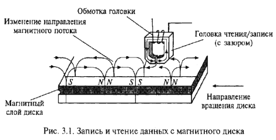
Магнитное покрытие имеет толщину в несколько микрометров. Покрытие наносится на немагнитную основу, в качестве которой для магнитных лент и гибких дисков используются различные пластмассы, а для жестких дисков - алюминиевые сплавы и композиционные материалы подложки. Магнитное покрытие диска имеет доменную структуру, т.е. состоит из множества намагниченных мельчайших частиц. Магнитный домен (от лат. dominiumn - владение) - это микроскопическая, однородно намагниченная область в ферромагнитных образцах, отделенная от соседних областей тонкими переходными слоями (доменными границами). Под воздействием внешнего магнитного поля собственные магнитные поля доменов ориентируются в соответствии с направлением магнитных силовых линий. После прекращения воздействия внешнего поля на поверхности домена образуются зоны остаточной намагниченности. Благодаря этому свойству на магнитном носителе сохраняется информация о действовавшем магнитном поле. При записи информации внешнее магнитное поле создается с помощью магнитной головки. В процессе считывания информации зоны остаточной намагниченности, оказавшись напротив магнитной головки, наводят в ней при считывании электродвижущую силу (ЭДС). Схема записи и чтения с магнитного диска дана на рис. 3.1. Изменение направления ЭДС в течение некоторого промежутка времени отождествляется с двоичной единицей, а отсутствие этого изменения - с нулем. Указанный промежуток времени называется битовым элементом.
Поверхность магнитного носителя рассматривается как последовательность точечных позиций, каждая из которых ассоциируется с битом информации. Поскольку расположение этих позиций определяется неточно, для записи требуются заранее нанесенные метки, которые помогают находить необходимые позиции записи. Для нанесения таких синхронизирующих меток должно быть произведено разбиение диска на дорожки и секторы - форматирование.
Организация быстрого доступа к информации на диске является важным этапом хранения данных. Оперативный доступ к любой части поверхности диска обеспечивается, во-первых, за счет придания ему быстрого вращения и, во-вторых, путем перемещения магнитной головки чтения/записи по радиусу диска. Гибкий диск вращается со скоростью 300-360 об/мин, а жесткий диск - 3600-7200 об/мин.
Накопители на гибких дисках относятся к устройствам долговременного хранения информации. Первый гибкий магнитный диск (ГМД) был создан в 1971 г. в лаборатории фирмы IBM, возглавляемой А.Шугартом, и имел диаметр 8". С 1975 г. начался серийный выпуск дисководов формата 5,25", а в 1981 г. стали стандартом диски диаметром 3,5". В 1986 г. фирма IBM начала выпуск гибких магнитных дисков (ГМД или дискет) 3,5" емкостью 720 Кбайт, а в 1987 г. многие фирмы-производители начали выпуск ГМД 3,5"емкостью 1,44 Мбайт. Фирма Toshiba в 1989 г. разработала новые диски емкостью 2,88 Мбайт. В настоящее время наибольшее распространение получили диски диаметром 3,5".
Для записи и считывания информации с ГМД используются периферийные устройства ПК - дисководы (Floppy Dick Drive - FDD).
Конструктивно дисковод состоит из механических и электронных узлов: рабочего двигателя, рабочей головки, шагового двигателя и управляющей электроники.
Рабочий двигатель включается тогда, когда в дисковод вставлена дискета. Двигатель обеспечивает постоянную скорость вращения дискеты: для дисковода 3,5" - 300 об/мин. Время запуска двигателя - около 400 мс.
Рабочие головки служат для чтения и записи информации и располагаются над рабочей поверхностью дискеты.
Поскольку обычно дискеты являются двухсторонними, т. е. имеют две рабочие поверхности, одна головка предназначена
для верхней, а другая - для нижней поверхности дискеты.
Шаговые двигатели обеспечивают позиционирование и движение рабочих головок. Именно они издают характерный
звук уже при включении ПК, перемещая головки для проверки работоспособности привода.
Управляющие электронные элементы дисковода чаще всего размещаются с его нижней стороны. Они выполняют функции передачи сигналов к контроллеру, т.е. отвечают за преобразование информации, которую считывают или записывают головки.
Для дискет размером 3,5"и емкостью 2,88 Мбайт, называемых ED дискетами (Extra High Density), разработан специальный стандарт дисководов, поскольку обычные дисководы не могут работать с такими дискетами. Кроме того, для установки в малогабаритные корпуса выпускаются специальные дисководы (Slimline дисководы 3,5"), которые имеют уменьшенную высоту (19,5 мм) по сравнению с обычными 3,5" FDD (25,4 мм).
В качестве посредника между дисководом и ПК служит контроллер. В современных ПК на материнских платах контроллер уже установлен. Он интегрирован в одну из микросхем Chipset, а на материнской плате имеется специальный разъем для подключения кабелей. Современные котроллеры поддерживают два FDD, обеспечивают скорость обмена данными до 62 Кбайт/с для стандартных накопителей на дисках 3,5". 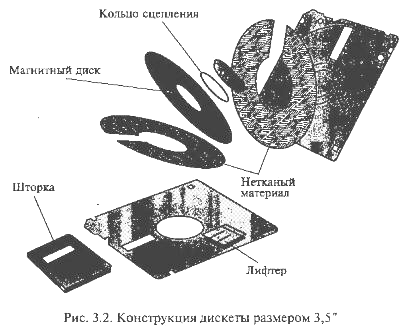
Дискеты (Flope Disk Driver, сокращенно Floppy) формата 3,5" являются современными носителями информации для приводов FDD.
На рис. 3.2 показано устройство дискеты 3,5". Внутри футляра (корпуса) находится пластмассовый диск с нанесенным на него магнитным слоем - магнитный диск. На всех футлярах имеется вырез, защищенный легко перемещаемой шторкой для защиты диска от механических повреждений. После установки дискеты в дисковод шторка автоматически сдвигается и предоставляет доступ к диску для головок чтения/записи. Поскольку сам диск постоянно вращается внутри футляра, головки «просматривают» всю область дискеты, находясь при этом в постоянном контакте с ее поверхностью. Дискета снабжена отверстием со скользящей пластиковой задвижкой. Если задвижка не закрывает отверстие, то дискета защищена от записи. В основном в компьютерах применяются накопители на дискетах 3,5" емкостью 1,44 Мбайт - стандарт HD (High Density), в то время как в старых ПК применяются диски емкостью 720 Кбайт - стандарт DD (Double Density). Емкость самых новых дисков 3,5" достигает 2,88 Мбайт - стандарт ED со сверхвысокой плотностью записи.
Магнитные диски называются носителями информации с прямым доступом, так как вследствие вращения диска с высокой скоростью имеется возможность перемещать под головки чтения/ записи любую его часть. Таким образом, можно непосредственно обратиться к любой части записанных данных. Этому способствует специальная организация дисковой памяти, в соответствии с которой информационное пространство диска форматируется, т. е. разбивается на определенные участки: дорожки и секторы. 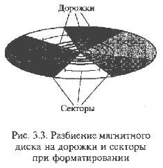
Дорожкой записи (Track) называется каждое из концентрических колец диска, на котором записаны данные. Поверхность диска разбивается на дорожки начиная с внешнего края, число дорожек зависит от типа диска. В гибких магнитных дисках 3,5" емкостью 1,44 Мбайт число дорожек равно 80. Дорожки независимо от количества идентифицируются номером (внешняя дорожка имеет нулевой номер). Число дорожек на стандартном диске определяется плотностью записи, т.е. объемом информации, который можно надежно разместить на единице площади поверхности носителя. Для магнитных дисков определены две разновидности плотности записи - радиальная (поперечная) и линейная (продольная). Поперечная плотность записи измеряется числом дорожек, размещенных на кольце диска шириной 1", а линейная плотность - числом бит данных, которые можно записать на дорожке единичной длины.
Каждое кольцо дорожки разбивается на участки, называемые секторами. Например, гибкий диск 3,5" может иметь на дорожке 18 секторов (емкость диска 1,44 Мбайт) или 36 секторов (емкость диска 2,88 Мбайт). Размер секторов различных дисков может составлять от 128 до 1024 байт, но в качестве стандарта принят размер сектора 512 байт. На рис. 3.3 показано разбиение магнитных дисков на дорожки и секторы. Секторам на дорожке присваиваются номера начиная с нуля. Сектор с нулевым номером на каждой дорожке резервируется для идентификации записываемой информации, но не для хранения данных.
Емкость дискеты вычисляется по следующей формуле:
Емкость дискеты = Число сторон х Число дорожек на стороне х Число секторов на дорожке х Число байт в секторе.
Первый накопитель на жестких дисках (Hard Disk Drive - HDD) был создан в 1973 г. по технологии фирмы IBM и имел кодовое обозначение «30/30» (двухсторонний диск емкостью 30+30 Мбайт), которое совпало с названием известного охотничьего ружья «винчестер», использовавшегося при завоевании Дикого Запада. По этой причине накопители на жестких дисках получили название «винчестер». В 1979 г. Ф.Коннер и А.Шугарт организовали производство первых жестких пятидюймовых дисков емкостью 6 Мбайт.
По сравнению с дискетами, HDD обладают такими преимуществами: значительно большая емкость (чтобы сохранить данные объемом 420 Мбайт, требуется один HDD или около 290 дискет 3,5" HD) и время доступа для HDD. Оно на порядок меньше, чем для приводов дискет.
Несмотря на большое разнообразие моделей винчестеров принцип их действия и основные конструктивные элементы одинаковы. На рис. 3.4 показаны основные элементы конструкции накопителя на жестком диске: 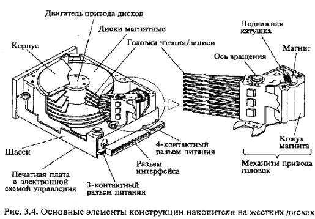
Типовой накопитель состоит из герметичного корпуса (гермо-блока) и платы электронного блока. В гермоблоке размещены все механические части, на плате - вся управляющая электроника. Внутри гермоблока установлен шпиндель с одним или несколькими магнитными дисками. Под ними расположен двигатель. Ближе к разъемам, с левой или правой стороны от шпинделя находится поворотный позиционер магнитных головок. Позиционер соединен с печатной платой гибким ленточным кабелем (иногда одножильными проводами).
Гермоблок заполняется воздухом под давлением в одну атмосферу. В крышках гермоблоков некоторых винчестеров имеется специальное отверстие, заклеенное фильтрующей пленкой, которое служит для выравнивания давления внутри блока и снаружи, а также для поглощения пыли.
Габаритные размеры винчестеров стандартизованы по параметру, называемому форм-фактор (Form-Factor). Например, все HDD с форм-фактором 3,5"имеют стандартные размеры корпуса 41,6x101x146 мм.
Подложки магнитных дисков первых винчестеров изготовлялись из алюминиевого сплава с добавлением магния. В современных моделях в качестве основного материала для дисковых пластин используется композиционный материал из стекла и керамики с малым температурным коэффициентом расширения, что делает их менее восприимчивыми к изменениям температуры, более прочными. Магнитные диски выпускаются следующих размеров: 3,5"; 5,25"; 2,5"; 1,8".
Диски покрываются магнитным веществом - рабочим слоем. Он может быть либо оксидный, либо на основе тонких пленок.
Оксидный рабочий слой представляет собой полимерное покрытие с наполнителем из окиси железа. Диски с таким рабочим слоем отличаются простым и недорогим процессом изготовления. Однако требуемое качество рабочей поверхности для накопителей большой емкости в рамках такой технологии оказалось получить невозможно. На смену пришла тонкопленочная технология.
Рабочий слой на основе тонких пленок имеет меньшую толщину и более прочен; качество его поверхности гораздо выше. Тонкопленочная технология легла в основу производства накопителей нового поколения, в которых удалось уменьшить зазор между головками и поверхностями дисков до 0,05-0,08 мкм и, следовательно, повысить плотность записи данных.
Головки чтения/записи предусмотрены для каждой стороны диска. Когда накопитель выключен, головки касаются диска. При раскручивании дисков возрастает аэродинамическое давление воздуха на головки, что приводит к их отрыву от рабочих поверхностей дисков. Чем ближе располагается головка к поверхности диска, тем выше амплитуда воспроизводимого сигнала.
До середины 1980-х гг. в накопителях на жестких дисках использовались ферритовые головки. На смену им пришли MIG-головки (MIG - Metall in Gap) - головки с металлом в зазоре, что позволило использовать носители с рабочим слоем на основе тонких пленок. Все возрастающие требования к емкости жестких дисков привели к появлению тонкопленочных головок (TF - Thin Film). Формируемые с помощью этих головок на рабочей поверхности диска участки остаточной намагниченности имеют четкие границы, что приводит к высокой плотности записи данных. В результате дальнейшего совершенствования конструкции и характеристик тонкопленочных головок появились магниторезистивные (Magneto-Resistive - MR) головки, которые в настоящее время используются в большинстве накопителей на жестких дисках 3,5", емкость которых может достигать 75 Гбайт.
Механизм привода головок обеспечивает перемещение головок от центра дисков к краям и фактически определяет надежность накопителя, его температурную стабильность и вибрационную устойчивость. Все существующие механизмы привода головок делятся на два основных типа: с шаговым двигателем и подвижной катушкой.
У накопителей с приводом на шаговом двигателе среднее время доступа к данным значительно больше, чем у накопителей с приводом на подвижной катушке. По этой причине привод с шаговым двигателем нашел основное применение в дисководах для гибких магнитных дисков и в накопителях на жестких дисках малой (до 100 Мбайт) емкости. В отличие от систем с шаговыми двигателями, в приводе с подвижной катушкой используется электронная обратная связь для точного определения местоположения головок и коррекции его относительно дорожек. В результате механизм оказывается быстродействующим и не столь шумным, как привод с шаговым двигателем.
Современные диски имеют функцию автоматической парковки. То есть при включении и выключении ПК головки устанавливаются по мере необходимости на определенный, чаще всего последний цилиндр. При парковке головки автоматически блокируются, и их дальнейшая работа невозможна.
Двигатель привода дисков приводит пакет дисков во вращение, скорость которого в зависимости от модели находится в пределах 3.600-7.200 об/мин (т.е. головки движутся с относительной скоростью 60-80 км/ч). Скорость вращения дисков некоторых винчестеров достигает 15.000 об/мин. Жесткий диск вращается непрерывно даже тогда, когда не происходит обращения к нему, поэтому винчестер должен быть установлен только вертикально или горизонтально.
Печатная плата с электронной схемой управления и прочие узлы накопителя (лицевая панель, элементы конфигурации и монтажные детали) являются съемными. На печатной плате монтируются электронные схемы управления двигателем и приводом головок, схема для обмена данными с контроллером. Иногда контроллер устанавливается непосредственно на этой плате.
Интерфейс - коммуникационное устройство (или протокол обмена), позволяющее одному устройству взаимодействовать с другим и устанавливать соответствие между выходами одного устройства и входами другого. Основная функция интерфейса HDD - передача данных из вычислителя ПК в накопитель и обратно. Разработано несколько основных типов интерфейсов: ESDI, IDE, SCSI. Распространенный в конце 1980-х гг. интерфейс ESDI не отвечает требованиям современных систем по быстродействию, кроме того, его различные исполнения часто бывают несовместимы. В связи с этим ему на смену пришли интерфейсы: IDE (1989 г.), обладающий повышенным быстродействием, и SCSI (1986 г.), имеющий большие возможности для расширения системы за счет подключения разнообразных устройств, а также E-IDE - расширенный IDE.
IDE и SCSI - интерфейсы, в которых контроллер выполнен в виде микросхемы, установленной на плате накопителя. В интерфейсе SCSI между контроллером и системной шиной введен еще один уровень организации данных и управления, а интерфейс IDE взаимодействует с системной шиной непосредственно.
Основными характеристиками накопителей на жестких дисках, которые следует принимать во внимание при выборе устройства, являются емкость, быстродействие и время безотказной работы.
Емкость винчестера определяется максимальным объемом данных, которые можно записать на носитель. Реальная величина емкости винчестера достигает сотни гигабайт. Прогресс в области создания и производства накопителей на жестких дисках приводит к тому, что ежегодно плотность записи (и соответственно емкость) увеличивается примерно на 60%.
Среднее время доступа к различным объектам на HDD определяет фактическую производительность накопителя. Время, необходимое винчестеру для поиска любой информации на диске, измеряется миллисекундами. Среднее время доступа винчестеров составляет 7-9 мс.
Размер кэш-памяти (быстрой буферной памяти) винчестеров колеблется в диапазоне от 512 Кбайт до 2 Мбайт.
Скорость передачи данных (Maximum Data Transfer Rate - MDTR) зависит от таких характеристик винчестера, как число байт в секторе, число секторов на дорожке, скорость вращения дисков, и может быть рассчитана по формуле:
MDTR = SRT • 512 • RPM/60 (байт/с),
где SRT - число секторов на дорожке; RPM - скорость вращения дисков, об/мин; 512 - число байт в секторе.
Средняя скорость передачи данных у накопителей 10-15 Мбайт/с.
Время безотказной работы для накопителей определяется расчетным среднестатистическим временем между отказами (Mean Time Between), характеризующим надежность устройства, указывается в документации и обычно составляет 20 000-50 0000 ч. Практика показывает, что если накопитель на жестком диске безотказно работает на протяжении первого месяца гарантийного срока, он будет так же безотказно работать до окончания срока своего морального старения. 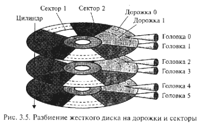
Подобно дискетам, жесткий диск делится на дорожки и секторы, как показано на рис. 3.5. Каждая дорожка однозначно определяется номером головки и порядковым номером, отсчитываемым на диске относительно внешнего края. Накопитель содержит несколько дисков, расположенных один над другим; их разбиения идентичны. Поэтому принято рассматривать пакет жестких дисков в виде цилиндров, каждый из которых состоит из аналогичных дорожек на поверхностях каждого диска. Секторы идентифицируются своим порядковым номером относительно начала дорожки. Нумерация секторов на дорожке начинается с единицы, а головок и цилиндров - с нуля.
Число секторов может быть от 17 до 150 в зависимости от типа накопителя. Каждый сектор содержит
данные и служебную информацию. Обычно объем сектора составляет 571 байт. В начале каждого сектора записывается
заголовок (Prefix Portition), по которому определяется начало сектора и его номер, а в конце сектора
(Suffix Portion - заключение сектора) содержится контрольная сумма, необходимая для проверки целостности данных.
Между заголовком и заключением сектора располагается область данных объемом 512 байт (для DOS). Таким образом,
запись информации на дорожках осуществляется блоками по 512 байт.
Число дисков, головок и дорожек винчестера изменить невозможно, поскольку они определяются изготовителем в соответствии с заданными свойствами и качеством дисков. Число секторов на диске зависит от метода записи, а плотность - от носителя: чем выше качество материала диска, тем плотнее могут быть записаны на нем данные. Винчестеры содержат до 150 секторов на дорожке.
Общий объем памяти НОВ рассчитывается по формуле
V = C х H х S х 512 (байт), где C- число цилиндров; H- число головок; S- число секторов.
Форматирование винчестера подобно форматированию дискеты. При этом нужно принимать во внимание, что в процессе форматирования все данные на винчестере теряются, поэтому при переформатировании винчестера следует сохранить необходимые данные на другом носителе.
На корпусе винчестера имеется этикетка с номером модели. В номере закодирована основная информация о характеристиках винчестера. На рис. 3.6 представлен пример маркировки винчестеров компании Western Digital.
Для просмотра фильма "Как это работает: накопитель на жестком магнитном диске (Discovery Chanel)" нажмите кнопку ВОСПРОИЗВЕДЕНИЕ.
Для решения широкого круга задач информатизации используются следующие оптические накопители информации:
Принцип действия всех оптических накопителей информации основан на лазерной технологии. Луч лазера используется как для записи на носитель информации, так и для считывания ранее записанных данных, и является, по сути, дела своеобразным носителем информации.
CD-ROM - компакт-диск (CD), предназначенный для хранения в цифровом виде предварительно записанной на
него информации и считывания ее с помощью специального устройства, называемого CD-ROM-driver,
- дисковода для
чтения компакт-дисков.
К числу задач, для решения которых предназначается устройство CD-ROM, можно отнести: установку и обновление программного обеспечения; поиск информации в базах данных; запуск и работу с игровыми и образовательными программами; просмотр видеофильмов; прослушивание музыкальных CD.
История создания CD-ROM начинается с 1980 г., когда фирмы Sony и Philips объединили свои усилия по созданию технологии записи и производства компакт-дисков с использованием лазеров. Начиная с 1994 г., дисководы CD-ROM становятся неотъемлемой частью стандартной конфигурации ПК. Носителем информации на CD-диске является рельефная подложка, на которую нанесен тонкий слой отражающего свет материала, как правило, алюминия. Запись информации на компакт-диск представляет собой процесс формирования рельефа на подложке путем «прожигания» миниатюрных штрихов-питов лазерным лучом. Считывание информации производится за счет регистрации луча лазера, отраженного от рельефа подложки. Отражающий участок поверхности диска дает сигнал «нуль», а сигнал от штриха - «единицу».
Хранение данных на CD-дисках, как и на магнитных дисках, организуется в двоичной форме.
По сравнению с винчестерами CD значительно надежнее в транспортировке. Объем данных, располагаемых на CD, достигает 700-800 Мбайт, причем при соблюдении правил эксплуатации CD практически не изнашивается.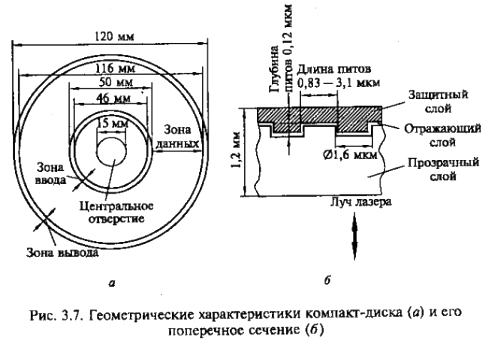
Процесс изготовления CD-дисков включает несколько этапов. На первом этапе создается информационный файл для последующей записи на носитель. На втором этапе с помощью лазерного луча производится запись информации на носитель, в качестве которого используется стеклопластиковый диск с покрытием из фоторезистивного материала. Информация записывается в виде последовательности расположенных по спирали углублений (штрихов), как показано на рис. 3.7. Глубина каждого штриха-пита (pit) равна 0,12 мкм, ширина (в направлении, перпендикулярном плоскости рисунка) - 0,8-3,0 мкм. Они расположены вдоль спиральной дорожки, расстояние между соседними витками которой составляет 1,6 мкм, что соответствует плотности 16000 витков/дюйм (625 витков/мм). Длина штрихов вдоль дорожки записи колеблется от 0,83 до 3,1 мкм.
На следующем этапе производятся проявление фоторезистивного слоя и металлизация диска. Изготовленный по такой технологии диск называется мастер-диском. Для тиражирования компакт-дисков с мастер-диска методом гальванопластики снимается несколько рабочих копий. Рабочие копии покрываются более прочным металлическим слоем (например, никелем), чем мастер-диск, и могут использоваться в качестве матриц для тиражирования CD-дисков до 10 тыс. шт. с каждой матрицы. Тиражирование осуществляется методом горячей штамповки, после которой информационную сторону основы диска, выполненную из поликарбоната, подвергают вакуумной металлизации слоем алюминия и диск покрывают слоем лака. Диски, выполненные методом горячей штамповки, в соответствии с паспортными данными обеспечивают до 10000 циклов безошибочного считывания данных. Толщина CD-диска 1,2 мм, диаметр -120 мм.
Для просмотра фильма "Как это сделано: CD-диски (Discovery Chanel)" нажмите кнопку ВОСПРОИЗВЕДЕНИЕ.
Привод СВ-КОМ содержит следующие основные функциональные узлы: 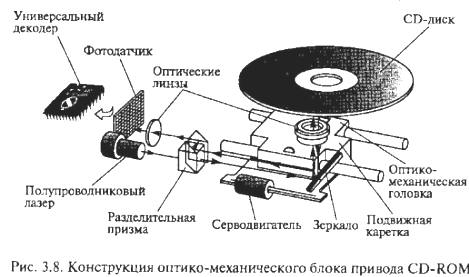
На рис. 3.8 дана конструкция оптико-механического блока привода СD-RОМ, который работает следующим образом. Электромеханический привод приводит во вращение диск, помещенный в загрузочное устройство. Оптико-механический блок обеспечивает перемещение оптико-механической головки считывания по радиусу диска и считывание информации. Полупроводниковый лазер генерирует маломощный инфракрасный луч (типовая дайна волны 780 нм, мощность излучения 0,2-5,0 мВт), который попадает на разделительную призму, отражается от зеркала и фокусируется линзой на поверхности диска. Серводвигатель по командам, поступающим от встроенного микропроцессора, перемещает подвижную каретку с отражающим зеркалом к нужной дорожке на компакт-диске. Отраженный от диска луч фокусируется линзой, расположенной под диском, отражается от зеркала и попадает на разделительную призму, которая направляет луч на вторую фокусирующую линзу. Далее луч попадает на фотодатчик, преобразующий световую энергию в электрические импульсы. Сигналы с фотодатчика поступают на универсальный декодер.
Системы автоматического слежения за поверхностью диска и дорожки записи данных обеспечивают высокую точность считывания информации. Сигнал с фотодатчика в виде последовательности импульсов поступает в усилитель системы автоматического регулирования, где выделяются сигналы ошибок слежения. Эти сигналы поступают в системы автоматического регулирования: фокуса, радиальной подачи, мощности излучения лазера, линейной скорости вращения диска.
Универсальный декодер представляет собой процессор для обработки сигналов, считанных с СD. В его состав входят два декодера, оперативное запоминающее устройство и контроллер управления декодером. Применение двойного декодирования дает возможность восстановить потерянную информацию объемом до 500 байт. Оперативное запоминающее устройство выполняет функцию буферной памяти, а контроллер управляет режимами исправления ошибок.
Интерфейсный блок состоит из преобразователя цифровых данных в аналоговые сигналы, фильтра нижних частот и интерфейса для связи с компьютером. При воспроизведении аудиоинформации ЦАП преобразует закодированную информацию в аналоговый сигнал, который поступает на усилитель с активным фильтром низких частот и далее на звуковую карту, которая связана с наушниками или акустическими колонками.
Ниже приводятся эксплуатационные характеристики, которые необходимо учитывать при выборе CD-ROM применительно к конкретным задачам.
Скорость передачи данных (Data Transfer Rate - DTR) - максимальная скорость, с которой данные пересылаются от носителя информации в оперативную память компьютера. Это наиболее важная характеристика привода CD-ROM, которая практически всегда упоминается вместе с названием модели. Непосредственно со скоростью передачи данных связана скорость вращения диска. Первые приводы CD-ROM передавали данные со скоростью 150 Кбайт/с, как и проигрыватели аудиокомпакт-дисков. Скорость передачи данных следующих поколений устройств, как правило, кратна этому числу (150 Кбайт/с). Такие приводы получили название накопителей с двух-, трех-, четырехкратной скоростью и т.д. Например, 60-скоростной привод CD-ROM обеспечивает считывание информации со скоростью 9000 Кбайт/с.
Высокая скорость передачи данных привода CD-ROM необходима прежде всего для синхронизации изображения и звука. При недостаточной скорости передачи возможны пропуск кадров видеоизображения и искажение звука.
Однако дальнейшее, свыше 72-кратности, повышение скорости считывания приводов CD-ROM нецелесообразно, поскольку при дальнейшем повышении скорости вращения CD не обеспечивается требуемый уровень качества считывания. И, кроме того, появилась более перспективная технология - DVD.
Качество считывания характеризуется коэффициентом ошибок (Error Rate) и представляет собой вероятность получения искаженного информационного бита при его считывании. Данный параметр отражает способность устройства CD-ROM корректировать ошибки чтения/записи. Паспортные значения этого коэффициента - 10-10 - 10-12. Когда считываются данные с загрязненного или поцарапанного участка диска, регистрируются группы ошибочных битов. Если ошибку не удается устранить с помощью помехоустойчивого кода (применяемого при чтении/записи), скорость считывания данных понижается и происходит многократный повтор чтения.
Среднее время доступа (Access Time - AT) - это время (в миллисекундах), которое требуется приводу, чтобы найти на носителе нужные данные. Очевидно, что при работе на внутренних участках диска время доступа будет меньше, чем при считывании информации с внешних участков. Поэтому в паспорте накопителя приводится среднее время доступа, определяемое как среднее значение при выполнении нескольких считываний данных с различных участков диска. По мере совершенствования приводов CD-ROM среднее время доступа уменьшается, но тем не менее этот параметр значительно отличается от аналогичного для накопителей на жестких дисках (100- 200 мс для CD-ROM и 7-9 мс для жестких дисков). Это объясняется принципиальными различиями конструкций: в накопителях на жестких дисках используется несколько магнитных головок и диапазон их механического перемещения меньше, чем диапазон перемещения оптической головки привода CD-ROM.
Объем буферной памяти - это объем оперативного запоминающего устройства привода CD-ROM, используемого для увеличения скорости доступа к данным, записанным на носителе. Буферная память (кэш-память) представляет собой устанавливаемые на плате накопителя микросхемы памяти для хранения считанных данных. Благодаря буферной памяти, данные, размещенные в различных областях диска, могут передаваться в компьютер с постоянной скоростью. Объем буферной памяти отдельных моделей привода CD-ROM - 512 Кбайт.
Средняя наработка на отказ - среднее время в часах, характеризующее безотказность работы привода CD-ROM. Средняя наработка на отказ различных моделей приводов CD-ROM 50-125 тыс. часов, или 6-14,5 лет круглосуточной работы, что значительно превышает срок морального старения накопителя.
В процессе развития накопителей на оптических дисках разработан целый ряд основных форматов записи информации на CD.
Формат CD-DA (Digital Audio) - цифровой аудио-компакт диск со временем звучания 74 мин.
Формат ISO 9660 - наиболее распространенный стандарт логической организации данных.
Формат High Sierra (HS) предложен в 1995 г. и обеспечивает чтение данных, записанных на диск в формате ISO 9660, с помощью приводов всех типов, что привело к широкому тиражированию программ на CD и способствовало созданию компакт-дисков, ориентированных на различные операционные системы.
Формат Photo-CD разработан в 1990-1992 гг. и предназначен для записи на CD, хранения и воспроизведения статической видеоинформации в виде высококачественных фотоизображений. Диск формата Photo-CD вмещает от 100 до 800 фотоизображений соответствующих разрешений - 2048x3072 и 256x384, а также сохраняет звуковую информацию.
Формат CD-I (Interactive) разработан для широкого круга пользователей как стандарт мультимедийного диска, содержащего различную текстовую, графическую, аудио- и видеоинформацию. Диск формата CD-I позволяет хранить видеоизображение со звуковым сопровождением (стерео) и длительностью воспроизведения до 20 мин.
Формат CD-DV (Digital Video) обеспечивает запись и хранение высококачественного видеоизображения со стереозвуком в течение 74 мин. При хранении обеспечивается сжатие по методу MPEG-1 (Motion Picture Expert Group). Чтение диска возможно с использованием аппаратного или программного декодера стандарта MPEG.
Формат 3DO разработан для игровых приставок.
Любой диск CD-ROM, содержащий текст и графические данные, аудио- или видеоинформацию, относится к категории мультимедиа. Мультимедиа CD существуют в различных форматах для различных операционных систем: DOS, Windows, OS/2, UNIX, Macintosh.
Приводы CD-ROM могут работать как со стандартным интерфейсом для подключения к разъему IDE (E-IDE), так и с высокоскоростным интерфейсом SCSI.
Самые популярные дисководы CD-ROM в России - изделия с торговыми марками Panasonic, Creative, Samsung, Pioneer, Hitachi, Teac, LG.
Накопители CD-WORM (Write Once Read Many) или CD-R (CD-Recortable) обеспечивают однократную запись информации на диск и последующее многократное считывание этой информации, в то время как накопители CD-RW (CD-ReWritable - перезаписывающий) позволяют осуществлять многократную запись на оптические диски.
Для однократной записи используются диски, представляющие собой обычный компакт-диск, отражающий слой которого выполнен, как правило, из золотой или серебряной пленки. Между ним и поликарбонатной основой расположен регистрирующий слой (рис. 3.9), выполненный из органического материала, темнеющего при нагревании. В процессе записи лазерный луч, длина волны которого, как и при чтении, составляет 780 нм, а интенсивность более чем в 10 раз выше, нагревает отдельные участки регистрирующего слоя, которые темнеют и рассеивают свет, образуя участки, подобные питам. Однако отражающая способность зеркального слоя и четкость питов у дисков CD-R ниже, чем у CD-ROM, изготовленных промышленным способом. 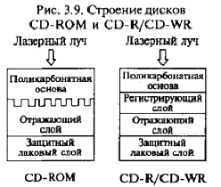
В перезаписываемых дисках CD-RW регистрирующий слой выполнен из органических соединений, известных под названиями цианин (Cyanine) и фталоцианин (Phtalocyanin), которые имеют свойство изменять свое фазовое состояние с аморфного на кристаллическое и обратно под воздействием лазерного луча. Такое изменение фазового состояния сопровождается изменением прозрачности слоя. При нагревании лазерным лучом выше некоторой критической температуры материал регистрирующего слоя переходит в аморфное состояние и остается в нем после остывания, а при нагревании до температуры значительно ниже критической восстанавливает свое первоначальное (кристаллическое) состояние. В перезаписываемых дисках регистрирующий слой обычно выполняется из золота, серебра, иногда из алюминия и его сплавов.
Существующие перезаписываемые CD-RW-диски выдерживают от нескольких тысяч до десятков тысяч циклов перезаписи. Однако их отражающая способность значительно ниже штампованных CD-ROM и СВ-R. В связи с этим для чтения CD-RW, как правило, применяется специальный привод с автоматической регулировкой усиления фотоприемника. Однако имеются модели приводов CD-ROM, маркируемые как MultiRead, которые обеспечивают считывание дисков CD-RW.
Преимущество CD-R/RW дисков - они тускнеют и выходят из строя медленнее обычных, поскольку отражающий слой из золота и серебра менее подвержен окислению, чем алюминий в большинстве штампованных CD-ROM дисков. Недостатки CD-R/RW дисков - материал регистрирующего слоя CD-R/RW дисков более чувствителен к свету и так же подвержен окислению и разложению. Кроме того, регистрирующая пленка находится в полужидком состоянии и потому весьма чувствительна к ударам и деформациям диска.
Информация на CD-R может быть записана несколькими способами. Наиболее распространен способ записи диска за один проход (disk-at-once), когда файл с жесткого диска записывается непосредственно за один сеанс и добавление информации на диск невозможно. В отличие от этого способ многосеансовой записи (track-at-once) позволяет производить запись отдельных участков (треков) и постепенно наращивать объем информации на диске.
Как любые накопители, CD-R и CD-RW выпускаются в двух вариантах: со стандартным интерфейсом для подключения к разъему IDE (E-IDE) и с высокоскоростным интерфейсом SCSI. Внешние дисководы CD-RW выпускаются с интерфейсами SCSI и USB.
Объем встроенной кэш-памяти важен для записывающих устройств, так как именно в ней накапливаются поступающие с жесткого диска данные. Средняя величина кэш-памяти 2-4 Мбайт.
Самыми популярными на российском рынке считаются накопители с торговыми марками Panasonic, Sony, Ricoh, Teac, Yamaha. Самые высококачественные и дорогие модели выпускаются фирмами Plextor и Hewlett-Packard. Среди недорогих IDE-дисководов популярны модели Mitsumi.
Благодаря дальнейшему развитию CD-технологий появились:
модифицированные CD-R диски емкостью до 870 Мбайт - 1 Гбайт, выпущенные фирмами Traxdata, Philips и Sony;
стандарт Double Density CD , предложенный Sony для дисков всех модификаций (CD, CD-R, CD-RW), позволяющий увеличить скорость традиционных CD до 1,3 Гбайт, или 150 минут аудиоинформации;
диск FMD-ROM, содержащий до 100 рабочих слоев, суммарная емкость которых не менее 140 Гбайт. Каждый слой такого диска содержит люминесцентное вещество, испускающее свет под действием считывающего луча. Каждый слой светится по-разному, но в то же время прекрасно проницаем для лазерных лучей, что позволяет производить считывание информации одновременно с нескольких слоев.
Решение проблемы увеличения емкости оптических носителей информации на базе совершенствования технологии производства CD и приводов, а также имеющихся научно-технических решений в области высококачественного цифрового видео привело к созданию CD-дисков повышенной емкости. В 1995 г. фирмы - производители CD предложили свои стандарты компакт-дисков с увеличенной емкостью. Одним из этих стандартов стал формат SD (Super Density). Во избежание многообразия и несовместимости стандартов в сентябре 1995 г. фирма Sony в союзе с восемью другими фирмами предложила новый универсальный формат записи данных на CD-DVD (Digital Versatile Disk). Этот формат, удовлетворяющий требованиям к воспроизведению видеоизображений и к хранению данных, получил активную поддержку среди ведущих производителей CD. 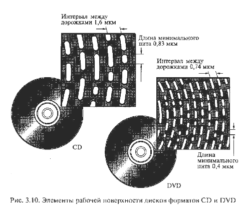
Качество изображения, хранимого в формате DVD, соизмеримо с качеством профессиональных студийных видеозаписей, причем качество звука также не уступает студийному. Считывание звуковой информации в формате DVD производится со скоростью 384 Кбайт/с, что позволяет организовать многоканальное звуковое сопровождение.
Такие возможности дисков формата DVD обусловлены улучшенными параметрами рабочей поверхности дисков. На рис. 3.10 приведены параметры элементов рабочей поверхности дисков, записанных в форматах CD и DVD. Так же как и CD, диск формата DVD имеет диаметр 120 мм. В приводе DVD используется полупроводниковый лазер с длиной волны излучения в видимой области 0,63-0,65 мкм. Такое снижение длины волны (по сравнению с 0,78 мкм у обычного CD-привода) обеспечило возможность уменьшения размеров штрихов записи (пит) практически в два раза, а расстояние между дорожками записи - с 1,6 до 0,74 мкм. Питы располагаются по спирали, как на виниловых долгоиграющих пластинках.
DVD-диски конструктивно выполняются односторонними и двухсторонними, однослойными и многослойными, как это показано на рис. 3.11. Односторонний однослойный DVD-диск обладает емкостью 4,7 Гбайта, а двухслойный - 8,5 Гбайта. Двухсторонний DVD-диск состоит из двух дисков толщиной по 0,6 мм, плотно соединенных друг с другом. На DVD-диске можно разместить полнометражный видеофильм (длительностью до 135 мин) с тремя каналами качественного звукового сопровождения и четырьмя каналами субтитров, применяя сжатие MPEG-2.
В накопителях стандарта DVD применяется более узкий луч лазера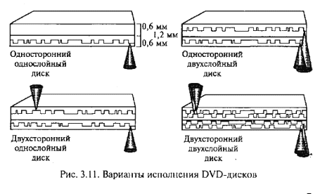, чем в приводах CD-ROM, что позволило уменьшить толщину защитного слоя диска в два раза: с 1,2 мм до 0,6 мм. Поскольку общая толщина диска должна была остаться неизменной (1,2 мм), под предохранительный слой был помещен укрепляющий слой.
На укрепляющем слое также стали записывать информацию, что привело к появлению двухслойных дисков DVD. Последовательное считывание информации с каждого слоя обеспечивается за счет изменения положения фокуса. Когда сфокусированным лазерным лучом считывается информация, записанная на первом слое, расположенном в глубине диска, луч беспрепятственно проходит через полупрозрачную пленку, образующую второй слой. По окончании считывания информации с первого слоя фокусировка луча лазера меняется по команде контроллера. Луч фокусируется в плоскости второго (наружного) полупрозрачного слоя, и считывание данных продолжается. Конструкция двухслойного одностороннего диска обеспечивает емкость 8,5 Гбайт.
Следующим шагом в развитии технологии DVD стало создание двухсторонних дисков, как однослойных, так и двухслойных, при этом емкость дисков составила 9,4 и 17 Гбайт при длительности воспроизведения записанной на них информации соответственно 4,5 и 8 ч.
Во избежание необходимости переворачивать вручную двухсторонний диск для доступа к данным на второй стороне наибольшую популярность получили приводы DVD, оснащенные двумя независимыми считывающими системами.
Приводы DVD-ROM поставляются как с аппаратным декодером MPEG-2 в виде карты расширения для шины PCI, так и с программным декодером. Записывающие DVD-R и перезаписывающие дисководы DVD-RW способны работать с однослойными односторонними дисками емкостью до 4,7-5,2 Гбайт при скорости записи информации около 1 Мбайт/с.
Для просмотра фильма "Как это работает: CD-плейер (Discovery Chanel)" нажмите кнопку ВОСПРОИЗВЕДЕНИЕ.
Магнитооптический (МО) привод представляет собой накопитель информации, в основу которого положен магнитный носитель с оптическим (лазерным) управлением.
Магнитооптическая технология была разработана фирмой IBM в начале 1970-х гг. Первые опытные образцы
магнитооптических накопителей представила в начале 1980-х гг. фирма Sony. Первые магнитооптические накопители
вначале не пользовались спросом вследствие дороговизны и сложности, однако по мере развития технологии и снижения
цен они стали занимать свое место на рынке технических средств информатизации. На рис. 3.12 представлено
устройство типичного магнитооптического диска, имеющего одну рабочую поверхность. Выпускаются магнитооптические
диски и с двумя рабочими поверхностями двух основных размеров - 3,5" и 5,25". Односторонний магнитооптический
диск представляет собой последовательность слоев: защитного, диэлектрического, магнитооптического, диэлектрического,
отражающего и подложки.
Технология изготовления магнитооптического диска состоит в следующем. На стеклопластиковую подложку наносится алюминиевое (либо золотое) покрытие, обеспечивающее отражение лазерного луча. Диэлектрические слои, окружающие с двух сторон магнитооптический слой, изготовлены из прозрачного полимера и защищают диск от перегрева, повышают чувствительность при записи и отражающую способность при считывании информации. Магнитооптический слой создается на основе порошка из сплава кобальта, железа и тербия. Свойства такого покрытия меняются как при температурном воздействии, так и при действии магнитного поля. Если нагреть диск свыше определенной температуры, возможно изменение магнитной поляризации посредством небольшого магнитного поля. Верхний защитный слой из прозрачного полимера, выполненный методом ультрафиолетового от-верждения, предохраняет рабочую поверхность от механических повреждений. Благодаря такой технологии и помещению в специальный пластиковый конверт — картридж, магнитооптические диски обладают повышенной надежностью и не боятся воздействия неблагоприятных условий окружающей среды.
Запись данных на МО-диск производится с использованием лазерной технологии. Луч лазера, сфокусированный на поверхности магнитооптического слоя в пятно с диаметром около 1 мкм, направляется в магнитооптический слой и нагревает его в точке фокусировки до температуры точки Кюри (около 200 °С) (рис. 3.13-а). При этой температуре резко падает магнитная проницаемость, и изменение магнитного состояния частиц выполняется относительно небольшим по величине магнитным полем магнитной головки. После охлаждения материала магнитная ориентация доменов в данной точке сохраняется. В зависимости от магнитной ориентации участка магнитного материала он интерпретируется как логический нуль или логическая единица. Данные записываются блоками по 512 байт.
Для изменения части информации в блоке необходимо перезаписывать его полностью, поэтому при первом проходе инициализируется (разогревается) весь блок, а при подходе сектора под магнитную головку происходит запись новых данных.
Считывание данных с диска происходит поляризованным лазерным лучом пониженной мощности, которой недостаточно для разогрева рабочего слоя: мощность лазера при считывании составляет 25 % мощности лазера при записи. Попадание луча на упоря-доченно ориентированные при записи данных магнитные частицы диска приводит к тому, что их магнитное поле незначительно изменяет поляризацию луча, т.е. наблюдается эффект Керра. На рис. 3.13-б дуговыми стрелками условно показана разная поляризация отраженного света. Отраженный свет попадает на фоточувствительный приемник, с помощью которого определяется изменение состояния его поляризации. В зависимости от этого светочувствительный элемент посылает двоичную единицу или двоичный ноль к контроллеру магнитооптического дисковода. 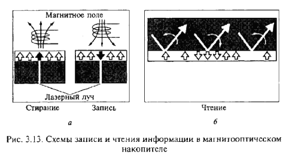
В отличие от компакт-диска данные на МО-диск теоретически можно записывать бесконечно, поскольку никаких необратимых процессов в материале носителя не происходит. Если нужно удалить старые данные, достаточно нагреть лазерным лучом соответствующие дорожки (секторы) и размагнитить их внешним магнитным полем.
Стандартные емкости МО-дисков: односторонних дисков 3,5" - 128, 230 и 640 Мбайт, двухсторонних - 600 и 650 Мбайт. Диски размером 5,25" выпускаются емкостью от 1,7 до 4,6 Гбайт. Фирма Maxell выпускает 12 "-диски однократной записи емкостью 3,5 Гбайт (односторонние) и 7 Гбайт (двухсторонние). Накопители для этих гигантских дисков, применяемых в системах архивирования, производит фирма Hitachi.
Быстродействие МО-накопителей ниже, чем накопителей со сменными магнитными носителями, хотя быстродействие новых моделей неуклонно возрастает. Одна из причин сравнительно низкого быстродействия МО-накопителей заключается в том, что скорость вращения диска всего 2000 об/мин. Кроме того, в МО-накопителях используется довольно массивная головка чтения/ записи, совмещающая в одном устройстве оптический и магнитный узлы.
Среднее время доступа к данным в МО-накопителях около 30 мс, а гарантийный срок работы (средняя наработка на отказ) - 75000ч.
Технология магнитооптической записи непрерывно совершенствуется. Несколько фирм выпускают МО-накопители с частотой вращения МО-диска 3600 об/мин, но их стоимость довольно высока. Лидерами рынка накопителей на МО-дисках являются компании Sony, Fujitsu и Hewlett-Packard.
Магнитооптические диски и накопители большинства фирм-изготовителей соответствуют требованиям международных стандартов, выпускаются как в виде встраиваемых устройств, так и во внешнем автономном исполнении с интерфейсами IDE и SCSI.
Помимо обычных дисководов широкое распространение получили так называемые оптические библиотеки с автоматической сменой дисков, емкость которых достигает сотен гигабайт и даже нескольких терабайт. Время автоматической смены диска - несколько секунд, а время доступа и скорость обмена данными - такие же, как у обычных дисководов.
Накопители на магнитной ленте применяются в системах резервного копирования. Резервное копирование данных необходимо, если емкость используемого накопителя на жестких дисках невелика и при этом на нем хранится много программ; результаты работы представлены большими массивами данных; отсутствует свободное место на жестком диске.
В качестве устройств записи данных на магнитную ленту (стримеров) сначала использовались катушечные накопители, аналогичные бытовым катушечным магнитофонам. В 1972 г. фирма ЗМ разработала первую кассету размером 15x10x1,6 см, предназначенную для хранения данных. Внутри кассеты находились две катушки, на которые лентопротяжным механизмом наматывалась лента в процессе чтения/записи. В 1983 г. был выпущен первый стандартный QIC (Quarter-Inch-Cartridge - накопитель на магнитной ленте), емкость которого составляла 60 Мбайт. Запись данных производилась на девяти дорожках, а магнитная лента имела длину около 90 м. В дальнейшем был разработан стандарт на мини-кассеты (формат МС). Габариты мини-кассеты, согласно этому стандарту, 8,25х6,35х155 см. Основу магнитного слоя лент QIC составляет оксид железа.
Наибольшее распространение получили накопители на магнитной ленте QIC-40 и QIC-80 формата МС, емкость которых составляет соответственно 40 и 80 Мбайт. Запись информации на кассету QIС-40 производится на 20 дорожек, плотность записи данных - 10.000 бит/дюйм.
Преимущества этих накопителей: удельная стоимость хранения данных на ленте (в пересчете на 1 Мбайт) значительно ниже, чем при использовании накопителей на гибких магнитных дисках, и, кроме того, ленточные накопители просты в использовании и надежны.
К недостаткам накопителей на кассетах QIC-40 и QIC-80 относится их низкое быстродействие, так как они подключаются к интерфейсу, предназначенному для накопителей на гибких дисках. Запись данных при этом производится со скоростью 250-500 Кбит/с, форматирование кассеты перед записью данных также требует много времени (например, для форматирования кассеты емкостью 60 Мбайт стандарта QIC-40 необходимо около полутора часов).
Дальнейшее развитие накопителей на магнитной ленте пошло по пути увеличения емкости кассет и повышения плотности записи данных. Были разработаны стандарты систем резервного копирования с емкостью кассет от 86 Мбайт до 13 Гбайт. В таких устройствах плотность записи данных на ленту составляет свыше 60 000 бит/дюйм. Запись производится на 144 дорожки. Совместимость кассет различных типов является чрезвычайно важным фактором, который необходимо учитывать при выборе устройства резервирования информации на магнитной ленте, так как ленты не всегда совместимы по своим магнитным свойствам.
Наряду с распространенными в настоящее время устройствами резервного копирования форматов QIC становятся популярны и другие устройства копирования на магнитной ленте, в частности, в компьютерных сетях, манипулирующих большими объемами данных.
Существуют следующие стандарты записи данных на магнитные ленты:
Фирмой Sony освоен выпуск устройств, в которых используются магнитные ленты шириной 4 мм для цифровой звукозаписи DAT (Digital Audio Tape) и ленты шириной 8 мм для видеозаписи. Кроме того, разработан стандарт для хранения данных в цифровом виде DDS (Digital Data Storage). При записи данных на магнитную ленту применяется наклонно-строчная технология, в результате которой используется практически вся поверхность ленты (в отличие от других методов, в которых дорожки оказываются разделенными промежутками).
В середине 1990-х гг. появилась новая технология, позволяющая обеспечить более высокую емкость, скорость передачи данных и надежность резервного копирования - технология DLT (Digital Linear Tape), которая считается одной из самых популярных. Накопители DLT могут хранить 20-40 Гбайт данных и обеспечивают скорость передачи данных 1,5-3,0 Мбайт/с. В накопителях стандарта ВЬТ во время чтения/записи магнитная лента, разделенная на параллельные горизонтальные дорожки, проходит через неподвижную магниторезистивную головку со скоростью 2,5-3,7 м/с, за счет чего повышается надежность работы головки и обеспечивается малый износ магнитного слоя ленты. Расчетный срок службы ленты - 500 000 перемоток. Накопители DLT рассчитаны на использование в сетевых серверах в качестве автоматизированных систем резервирования данных на магнитных лентах.
Стандарт кассет TRAVAN разработала фирма ЗМ. Накопители TRAVAN размещаются в отсеке для дисковода 3,5". Они могут работать как с оригинальными мини-кассетами стандарта TRAVAN, так и с кассетами стандарта QIC. Кассета (или картридж) TRAVAN содержит 225-метровую магнитную ленту шириной 8 мм. Сегодня имеются четыре типа кассет и накопителей TRAVAN (TR-1, -2, -3, -4). Емкости мини-кассет TRAVAN (в соответствии с типом 1, 2, 3 или 4) составляют 400, 800, 1000 и 4000 Мбайт соответственно. Все накопители TRAVAN обеспечивают аппаратное сжатие данных с коэффициентом 2:1, что увеличивает емкость кассет вдвое, т.е. накопитель TR-4 способен хранить до 8 Гбайт информации. Накопители TR-1, -2, -3 обычно подключаются к системе через контроллер накопителя на гибких дисках или параллельный порт, а TR-4 использует интерфейс SCSI-2.
Для современного уровня развития компьютерных технологий характерен неуклонный рост объема данных, хранящихся на серверах. Технологии резервного копирования выходят на передний план, так как затраты на восстановление утерянных данных слишком велики.
Много новых возможностей ожидается от развития технических средств. Наиболее перспективными считаются формат DAT DDS-3 - для небольших организаций с суммарным объемом данных до 10 Гбайт и стандарт DLT — для накопителей на магнитных лентах больших объемов. Стандарт DLT развивается в настоящее время по двум направлениям: создание DLT 4000 (интерфейс SCSI-2 Fast) — для объема данных 20 Гбайт и DLT 7000 (интерфейс SCSI-2 Fast/Wide) - для объема данных 35 Гбайт. Скорость передачи данных для DLT 7000 5—10 Мбайт/с. Американская компания ADIC заявила о выпуске в ближайшем будущем накопителей для резервного копирования данных на магнитных лентах объемом от 11 до 55 Тбайт. Гарантийный срок хранения информации 30 лет.
Для обеспечения гарантированного хранения особо важных данных в оригинальных накопителях применяется новая магнитная головка и технология записи MLR-RWR (Multi-channel Linear Recording-Read While Write), заключающаяся в том, что одновременно с записью информации по нескольким каналам производится ее считывание и сравнение с исходной, а в случае необходимости - коррекция.
При современных объемах программного обеспечения и размерах файлов носитель информации на гибких дисках емкостью всего 1,44 Мбайт не в состоянии обеспечить обмен данными между PC и тем более не может использоваться для хранения резервных копий и архивов.
Решение этой проблемы связано с созданием таких накопителей, как LS-120, SyQuest, Zip, Jaz, MO, ORB и др.Важнейшим параметром оценки этих устройств является совместимость с FDD, т. е. способность устройства читать и записывать данные на гибкий диск 3,5" емкостью 1,44 Мбайт. Все перечисленные устройства несовместимы с FDD, поскольку работают только со своими дисками. Исключение составляет дисковод LS-120, который в состоянии читать кроме своих дискет емкостью 120 Мбайт стандартные дискеты емкостью 1,44 Мбайт.
Дисководы LS-120 выпускаются фирмами как внешние устройства с интерфейсом LPT или внутренние с интерфейсом IDE. Несомненным преимуществом дисковода 1,8-120 является высокая емкость дискеты (120 Мбайт) при достаточно низкой цене накопителя с интерфейсом IDE. При этом скорость чтения/записи в несколько раз выше, чем у FDD (80-100 Кбайт/с в DOS и 200-300 Кбайт/с в Windows по сравнению с 60 Кбайт/с у FDD). Дисководы LS-120 являются магнитными накопителями информации и имеют такие же недостатки, как и все магнитные носители информации: чувствительность к магнитным полям, пыли и механическим деформациям.
Сменные жесткие диски используются при необходимости размещения больших объемов данных на малогабаритных носителях. У сменного винчестера переносным является не только носитель информации, но и весь дисковод, который вынимается из своих направляющих в корпусе ПК. Чаще всего это IDE диски, которые устанавливаются в корпус компьютера. Для извлечения дисковода на передней панели имеется специальная ручка. С обратной его стороны находится адаптер, который обычно обеспечивает силовое питание и связь для приема/передачи данных. Использование сменного жесткого диска такого рода для частого обмена информацией между удаленными ПК не дает желаемых результатов в связи с недостаточной защищенностью от внешних воздействий, возникающих при их транспортировке. Рекомендуется использовать сменные жесткие диски главным образом для целей архивирования данных.
Рассмотрим отдельные модели накопителей на сменных жестких дисках:
SyQuest - это накопитель на сменных дисках емкостью более 2 Гбайт. Такие накопители производятся только с интерфейсом SCSI. В устройстве используется технология магнитного носителя со встроенными головками, т.е. считывающие головки находятся в картридже. Пиковая скорость передачи - более 10,6 Мбайт/с, а время доступа около 12 мс. Накопители SyQuest предназначены для использования в корпоративных сетях и в профессиональных видеостудиях.
Накопитель SyJet содержит картриджи с жесткими дисками емкостью 1,5 Гбайт. Картридж имеет два диска, четыре поверхности, а считывающие головки находятся снаружи, т.е. в приводе. Использование таких картриджей позволило достичь высокой производительности накопителя: пиковая скорость обмена данными - более 10 Мбайт/с, средняя скорость передачи - 7 Мбайт/с, а время доступа к данным - 11 мс.
SparQ - накопитель 3,5"со сменными картриджами емкостью 1 Гбайт. Выпускается с интерфейсами LPT, EIDE и USB. Обеспечивает время доступа 12 мс. Средняя скорость передачи данных 3,7-6,9 Мбайт/с.
EZFlaer - накопитель 3,5"с картриджем емкостью 30 Мбайт. Основан на технологии жестких дисков. Выпускается с интерфейсами SCSI (как внутренний, так и внешний), LPT и EIDE. При скорости вращения диска 3600 об/мин и среднем времени доступа 13,5 мс обеспечивает скорость передачи данных до 16,6 Мбайт/с.
Приводы Jaz и Zip разработки компании iOmega благодаря хорошему соотношению цена/производительность превосходят по своим характеристикам существующие на рынке накопители со сменными носителями. В этих устройствах применяется традиционная технология магнитных носителей, но с более совершенной системой позиционирования головок чтения/записи и надежной механикой привода. В приводе Jaz в качестве носителя используется жесткая дисковая пластина, а в Zip - гибкий диск, аналогичный обычным пластинам флоппи-дисков. Емкость картриджа модели ZIP250 — 250 Мбайт, картриджей Jaz - 540 и 1070 Мбайт, а картриджа модели Jaz 2 - 2 Гбайт.
Накопители Jaz и накопители Zip бывают двух видов - внутренние и внешние. Внутренний привод устанавливается в один из отсеков для установки дисководов. В комплект такого устройства входит адаптер SCSI. Внешний привод Zip подключается непосредственно к параллельному порту ПК. Привод Jaz является SCSI-устройством, в комплект которого входит адаптер SCSI.
Привод Zip может быть эффективно использован как накопитель на гибких дисках эпохи мультимедиа: его можно использовать для переноса файлов достаточно большого объема, поскольку масса накопителя Zip всего 450 г, а габаритные размеры - 3,7х 13,6х 18,0 см. Можно использовать также для хранения резервных копий файлов, записанных на винчестер. Zip эффективно можно использовать при работе с закрытой информацией, так как в самом устройстве предусмотрена функция введения пароля.
ORB - это накопитель на сменных дисках, разработанный на основе передовой технологии MR (Magneto Resistive) фирмы Intel. В качестве носителя данных используется сменный жесткий диск размером 3,5", заключенный в картридж. Посредством использования технологии MR (магниторезистивных головок и особого магнитного материала), а также цифрового сигнального процессора удалось создать накопитель на сменных дисках емкостью 2,2 Гбайт (больше, чем диск Jaz 2), со скоростью вращения 5400 об/мин и максимальной скоростью передачи данных 12,2 Мбайт/с. Благодаря оптимальному соотношению показателя качество/цена, накопитель ORB успешно конкурирует с устройствами аналогичного назначения.
Какие виды накопителей информации применяются в составе технических средств информатизации?
Какие физические процессы положены в основу записи и воспроизведения информации на магнитных носителях?
Из каких основных конструктивных элементов состоит дисковод для гибких магнитных дисков и как он функционирует?
Назовите основные конструктивные элементы накопителя на жестких магнитных дисках. Объясните их функциональное назначение.
Какие основные характеристики необходимо принимать во внимание при выборе накопителя на жестком магнитном диске?
Перечислите основные этапы процесса изготовления CD-дисков. Как производится организация данных на CD-ROM?
Как производится запись информации на дисках CD-WORM, CD-R и CD-RW?
В чем основное преимущество накопителей DVD? Как производится считывание информации с двухслойного DVD-диска?
Как производятся запись и считывание информации с магнитооптических дисков?
Перечислите области применения, преимущества и недостатки накопителей на магнитной ленте.